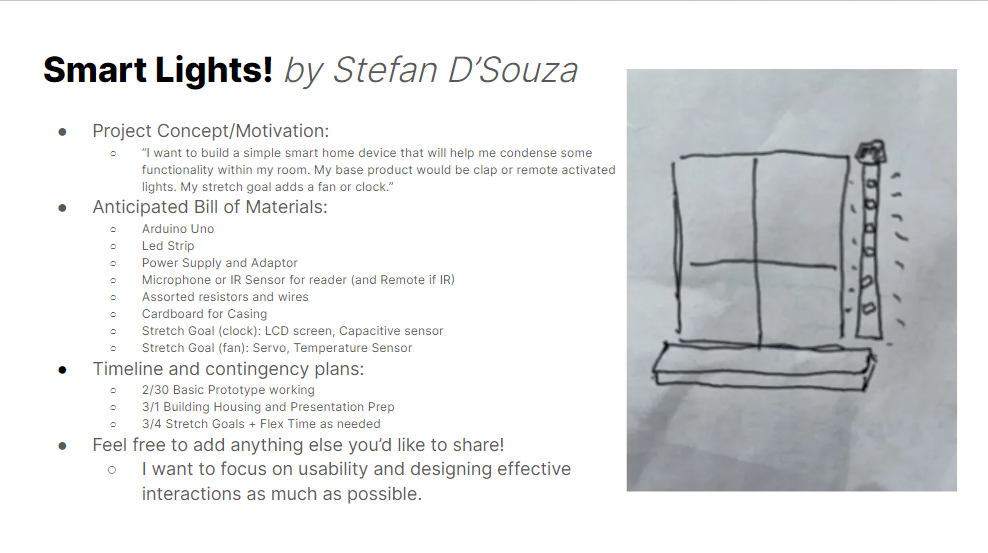

For this project my primary goal was to develop devices that could be used in the home and which would be able to offer a quality of life boost by making some components of household utilities a bit easier to interact with. The project was heavily inspired by smart devices, although I moved away from them a bit after realizing my microphone sensor was not good enough. A large focus for me was to make items that would have accessible and easy to use interactions - so not heavily push sensitive. The housing, meanwhile, was meant to be more of a proof of concept than a final design, especially since I had to use a borrowed arduino (initially I was going to use two separate ones but my arduino broke) and jury-rig a couple broken parts.
In specific, I targeted two components as my "widgets", a led light strip that would shift modes, and a fan. The fan was a stretch goal and the led light strip was the core component of the project. In my implementation, the led light strip used a remote control, and the fan used capacitive sensing.

This schematic is complete, although it doesn't mention power supply to arduino (as if it was plugged in to the computer in previous assignments). The power supply to the arduino in this was done by a 9V battery but could be done with the computer instead.
The LED strip in the schematic was the only one cad offered, and was a slightly different variety to the one we use, so the D In and D Out sections may be ignored.

This schematic also does not show power supply to arduino, but it also doesn't show the metal piece used in the capacitive sensor, as this cannot be modeled in TinkerCAD. However, it would be attached to pin 10 by an alligator clip, which would look like a wire coming out between pin 10 and the resistor in the schematic, and connecting to a shape labeled "Metal Piece".
I wasn't sure if I needed to provide calculations and this writeup is a bit on the long side, but the LED power and current calculations can be found in my A5: link

The LED strip in the schematic was the only one cad offered, and was a slightly different variety to the one we use, so the D In and D Out sections may be ignored.

A lot of the things were secured in place with tape since I borrowed many of my components and thus didn't want to solder or glue things together.

As mentioned in the Schematic section, CAD doesn't let me show the metal piece for capacitive sensing, but it is depicted in the static image below. In the tinkercad static image, it would be connected by a wire to the wire coming from pin 10, on the side plugged in to the breadboard.
The datasheet used to find the servo's max current is here: link

This static image required taking apart parts of the fan, so it would look a bit different (for example the button location) internally when all together.
#include <IRremote.h> // Includes IR Library
const int irPin = 11; // sets ir Pin
IRrecv irrecv(irPin); // starts receiving on pin 11
decode_results results; // variable for decoded results
int mode = 0; // Mode Flag
int i = 254; // i var for fading lights
int iterVal = -1; // incrementor for fading lights
void setup(){
irrecv.enableIRIn(); // enables IR
}
void loop(){
// if we receive input (stored at address of results)
if (irrecv.decode(&results)){
// Increment mode
mode += 1;
// if mode is more than 3
if (mode > 3) {
mode = 0; // set mode to 0
}
// delay to avoid multiple reads from one button press
delay(1000);
// Resumes IR sensing
irrecv.resume();
}
// in mode 0...
if (mode == 0) {
analogWrite(6, 0); // writes 0 to gate pin
i = 254; // resets i
iterVal = -1; // resets iterator (could also be called incrementor)
} else if (mode == 1) { // if mode is 1...
analogWrite(6, 122); // writes 122 to gate pin
} else if (mode == 2) { // if mode is 2...
analogWrite(6, 255); // writes 255 to gate pin
} else if (mode == 3) { // if mode is 3...
analogWrite(6, i); // writes i to gate pin (for fade)
i += iterVal; // increments i by incrmentor
// whenever i is about to go out of bounds of analogWrite, we
// reverse fade direction
if (i == 255 || i == 0) {
iterVal *= -1; // changes the sign of the iterVal
}
// delay so we can see the fade
delay(10);
}
}
#include <IRremote.h> // Include IR Library
#include <CapacitiveSensor.h> // Include Capacitive Sensor Library
// Initiates capacitive sensor
CapacitiveSensor capSens = CapacitiveSensor(11,10);
// Mode Flag (This could also be a bool but I wanted to leave potential for multiple modes)
int mode = 0;
// Max for calibration
long maxVal = INT8_MIN;
// Boolean for if we should delay this instance
bool toDel = false;
void setup(){
// Serial Monitor - For debugging
// Serial.begin(9600);
// Delay since IR library sometimes lags when arduino boots up
delay(5000);
// We do 30 calibration cycles
for (int i = 0; i < 30; i++) {
// Performs a sensor reading
long temp = capSens.capacitiveSensor(15);
// If this is a new maximum val
if (temp > maxVal) {
maxVal = temp; // we set the environmental max to this val
}
}
}
void loop(){
// capSensed is a capacitive sensor reading
long capSensed = capSens.capacitiveSensor(15);
// Serial Debugging Statements
// Serial.println(capSensed);
// Serial.println(maxVal);
// Our threshold for a sensor read is 5x the max environmental value
if (capSensed > (5 * maxVal)){
// Increments mode
mode += 1;
// we only allow modes 0 and 1 currently
if (mode == 2) {
mode = 0; // sets the mode to 0 if it goes over supported modes
}
// sets the delay flag
toDel = true;
}
// if Mode is 0
if (mode == 0) {
// We send 0 to our enable pin
analogWrite(6, 0);
} else { // otherwise
// we send 255 to our enable pin
analogWrite(6, 255);
}
// Now that we've initiated the target behavior, we
// do our delays so the sensor doesn't read the same touch
// multiple times
if (toDel == true) {
// Delay to prevent repeat reads
delay(1000);
// turns the flag back off
toDel = false;
}
}
The lights component was the primary piece of the project. The initial goal was for this to be operated through a microphone, with claps being a signal to switch modes, but issues with the microphone caused me to change over to a IR receiver and a remote control. In terms of implementation, there are two primary parts to the circuit- an IR receiver, and the LED control system. The IR receiver is hooked up to the arduino directly. It's role is to identify whenver a remote control button is pressed and the signal is received. In this implementation, any button press will trigger the mode-shift, such that any button may be used interchangably. I based this on christmas tree lights and how they work. The other component was the LED strip. This section was also hooked up to the arduino, as well as an external power source (the battery) and a transistor. The power source was always linked to the LED strip, and I controlled the brightness of that strip by changing the value written to the transistor's gate pin, which changed the amount of current which was allowed to flow (and the brightness as a direct result). I also used a pair of power supply batteries, one of which powered the arduino and one of which was used directly for the LED strip's power
From a code perspective, my implementation was fairly straightforward, I used the IR library in order to receive signals with my IR receiver, and any time a signal was received, I changed to the next mode in a series of modes I had chosen to support. The different modes were dim, bright, fading, and off. For dim, bright, and off, I implemented this by checking if their mode was active, and then by writing the appropriate value to the transistors gate pin to produce a current that would show that level of brightness. Implementing the fading was a bit trickier, since I wanted to show the fade but also keep checking for new signals while the fading action occurs. To do this, I moved the i value in the fade code (using a fairly standard fading implementation that goes from i = 0 to 255 and writes i) into being a global variable. Then, whenever the loop ran, it first checked for signal, and then adjusted the output based on the current i value. For this, I also had to make it so that the change in i was a global variable. For this mode only, I did have to add a delay, or the light wouldn't show the fading process well, but it was a minimal delay and I don't think it would be especially noticeable.
From an interaction perspective, the remote control element appealed to me because it held a lot of those smart home elements still. Although this wasn't in the scope of my project, one could easily use or make an app that simulates ir signals on your phone. This isn't just convenient, but it also increases accessibility, especially for people with disabilities that prevent them from exerting pressure, which can make traditional buttons a bit of a disaffordance. One challenge I ran into for this is that there needed to be a lockout so pressing the remote wouldn't send a dozen signals and cause the mode to shift many times a second, but I also wanted the remote press to feel responsive. In the end, I decided to use a 1 second delay after a button press, which causes some slight friction but given that users tend to wait a second for a response (for example, clicking the power button on a tv remote), it seemed like a reasonable implementation, especially since I wanted it to be consistent for the fading as well, else it would have a fast response for the normal impementations and a slow response for the fade. A way I realized to potentially address it would be to set the delay to the length of a single fade direction and give it a one time flag to run, and then shift the delay to the light control section after the swap in lighting, and just not put the delay for the in the fade's if case. However, I thought of this solution after the presentation and I didn't want my implementation to not line up.
The fan was a stretch goal. It wasn't meant to be hugely innovative as much as it was something to build off the lights and that coexist in the same ecosystem. It was initially going to be remote controlled, but my IR sensor broke so I moved to the backup option for it, capacitive sensing. I used capacitive sensing as an option since it would still uphold the accessibility values of being touch (without presses) based, and because it provides a nice and easy to understand button. The button is made using a capacitive sensing setup, and the fan is a dc motor with a fan attachment that is powered directly by the arduino. The speed at which the motor runs is controlled by the value we write to the enable pin of the L293D chip, which I used since it's reliable and has a lot of functionality built in to it.
From a code perspective, the implementation was very similar to that of my lights, circuit. I used a similar mode construction, and although I only supported on and off, more modes could be added onto that system just by adding to the maximum mode and to the if statement that determined otput. In a bit more detail, we'd just need to write a different value to the enable pin, which would give us a different overall result in terms of motor speed and air moved. One tricky bit about the code here was calibrating for capacitive sensing, since it was no longer reasonable to hard-code thresholds based on my current environment. To do this, I performed a basic calibration process to get a good idea of the environment's capacitive sensing values, and then picked a read threshold that was comfortably over to the point that it only triggered on contact in my testing.
From an interaction perspective, I found the capacitive sensing to be really enjoyable to use, although I might consider implementing some form of haptic feedback if I developed the project further. Without the complication of the fading, I was able to use a global flag for if I should delay to separate my value being read and the code that changed the state of the fan so I could defer the delay until after the the fan swapped modes. Briefly discussing the IR reciever, I had found it to be fairly directional, so if I had been able to go with that implementation instead I don't think the two devices would have competed for or erroneously received each other's signals, and this could be worked around regardless by making the remote signal specific, which a phone implementation could greatly aid.
Overall, I think this project was really interesting to me and I learned a lot from it!
Link: link
Link: link